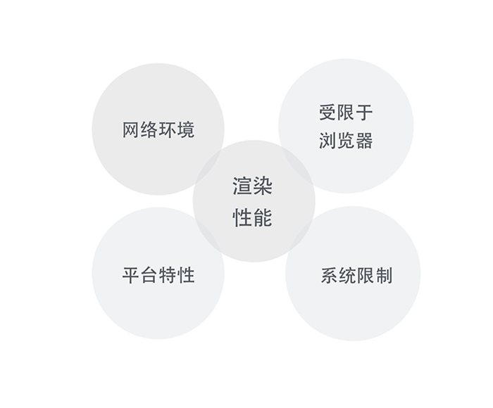
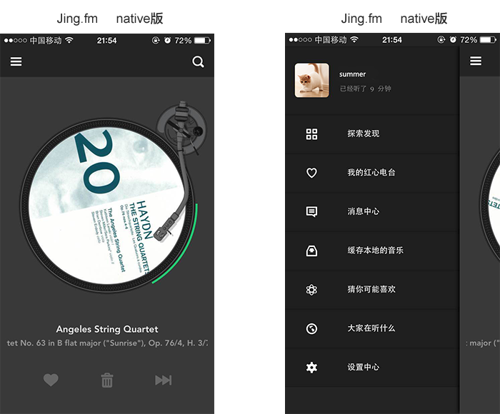
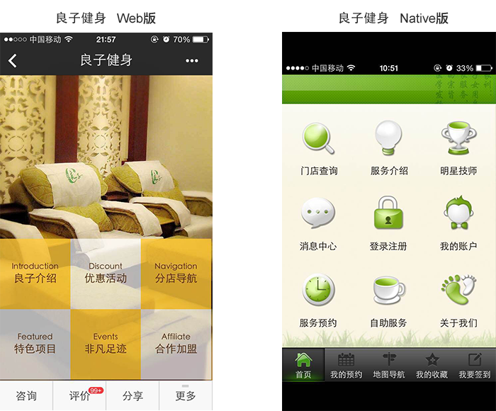
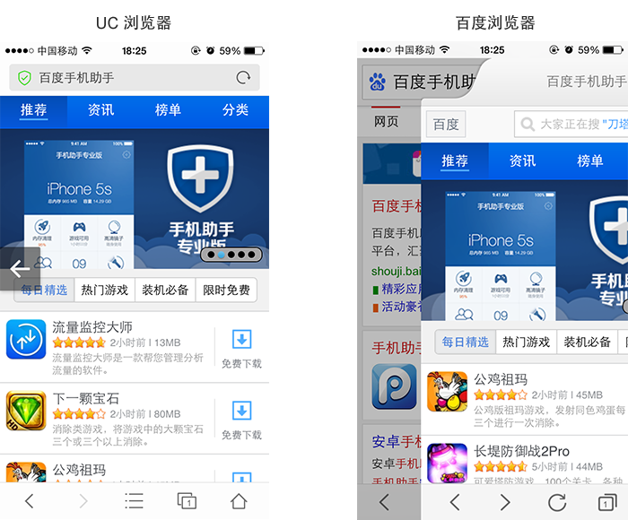
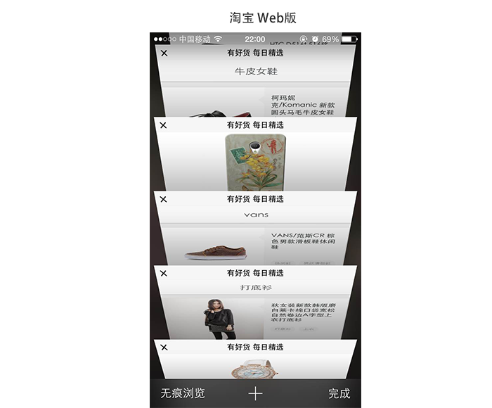
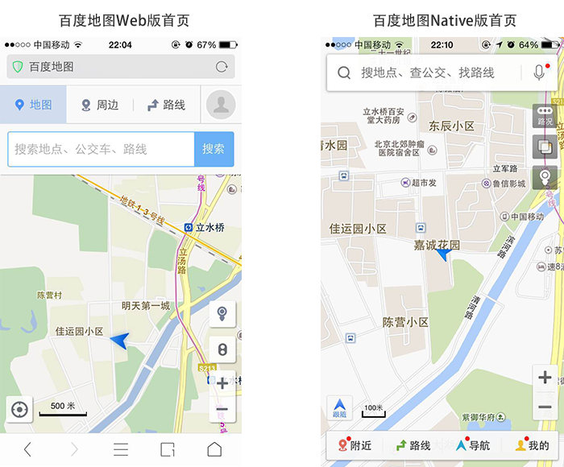
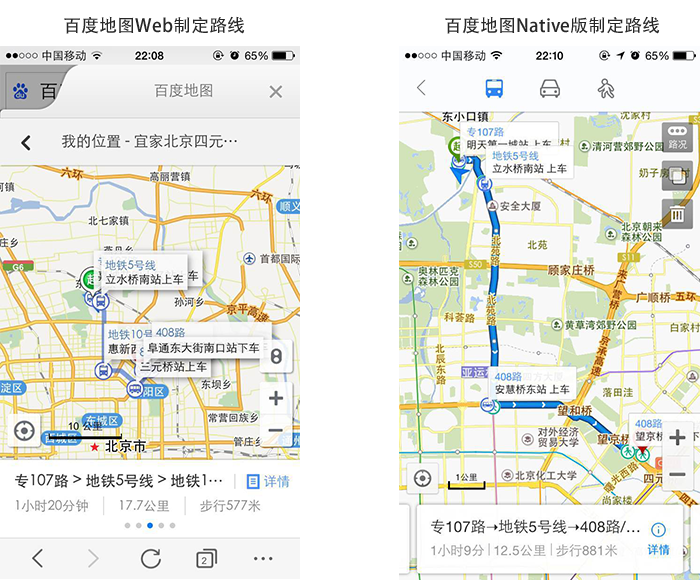

聊聊Web App、Hybrid App与Native App的设计差异
目前主流应用程序大体分为三类：Web App、Hybrid App、 Native App。

一、Web App、Hybrid App、Native App 纵向对比
首先，我们来看看什么是 Web App、Hybrid App、 Native App。
1. Web APP
Web App 指采用Html5语言写出的App，不需要下载安装。类似于现在所说的轻应用。生存在浏览器中的应用，基本上可以说是触屏版的网页应用。
优点
（1）开发成本低，
（2）更新快，
（3）更新无需通知用户，不需要手动升级
（4）能够跨多个平台和终端。
缺点：
（1）临时性的入口
（2）无法获取系统级别的通知，提醒，动效等等
（3）用户留存率低
（4）设计受限制诸多
（5）体验较差
2. Hybrid App
Hybrid APP指的是半原生半Web的混合类App。需要下载安装，看上去类似Native App，但只有很少的UI Web View，访问的内容是 Web 。
例如Store里的新闻类APP，视频类APP普遍采取的是Native的框架，Web的内容。
Hybrid App 极力去打造类似于Native App 的体验，但仍受限于技术，网速，等等很多因素。尚不完美。
3. Native App
Native APP 指的是原生程序，一般依托于操作系统，有很强的交互，是一个完整的App，可拓展性强。需要用户下载安装使用。
优点：
（1）打造完美的用户体验
（2）性能稳定
（3）操作速度快，上手流畅
（4）访问本地资源（通讯录，相册）
（5）设计出色的动效，转场，
（6）拥有系统级别的贴心通知或提醒
（7）用户留存率高
缺点：
（1）分发成本高（不同平台有不同的开发语言和界面适配）
（2）维护成本高（例如一款App已更新至V5版本，但仍有用户在使用V2， V3， V4版本，需要更多的开发人员维护之前的版本）
（3）更新缓慢，根据不同平台，提交–审核–上线 等等不同的流程，需要经过的流程较复杂
二、Web App、Hybrid App、Native App 技术特性

由上图可见，Web APP 的开发基于Html5语言。而Html5语言本身又有着不可避免的局限性。正是这些局限性的存在，使得Web App在体验中要逊于Native App。
三、Web App受限制因素及设计要点

相比Native App，Web App体验中受限于以上5个因素：网络环境，渲染性能，平台特性，受限于浏览器，系统限制。
1. 网络环境，渲染性能
Web APP对网络环境的依赖性较大，因为Web APP中的H5页面，当用户使用时，去服务器请求显示页面。如果此时用户恰巧遇到网速慢，网络不稳定等其他环境时，用户请求页面的效率大打折扣，在用户使 用中会出现不流畅，断断续续的不良感受。同时，H5技术自身渲染性能较弱：对复杂的图形样式，多样的动效，自定义字体等的支持性不强。
因此，基于网络环境和渲染性能的影响，在设计H5页面时，应注意以下几点：
- 简化不重要的动画/动效
- 简化复杂的图形文字样式
- 减少页面渲染的频率和次数
从下图移动Web版 jing.fm和Native版jing对比后可以看出：Web APP首页去除冗余的功能，回溯本源，只给用户提供了jing.fm最初的本质需求——电台。既符合H5精简功能又达到了突出核心功能的设计原则。无疑给用户眼前一亮的气息。
正如书中《瞬间之美》的一个核心观点：重要的并不是我们提供的信息量有多大，而是我们能否给他们提供真正需要的信息。


再如：百度最新推出的直达号，以良子健身为例：
从Native App和Web App（百度直达号）的对比中，我们可以看出Native良子以九宫格的形式展现，且属于双重导航，功能入口太多；弊端是用户不知道聚焦在哪里，分散用户 的注意力。而Web版良子整合并减少了导航的入口，增强用户的专注度；界面清爽，整洁，很好地传达了良子本身的寓意——轻松、愉悦、休闲、舒适。

2. 受限于浏览器
通常Web App生存于浏览器里，宿主是浏览器。不同的浏览器自身的属性不尽相同，如：浏览器自带的手势，页面切换方式，链接跳转方式，版本兼容问题等等。
例如下图：UC 浏览器和百度浏览器自身支持手势切换页面。手指从左侧滑动页面，返回至上一级。百度手机助手H5页面，顶部Banner支持手势左右滑动切换。这一操作与浏览器自身手势是冲突的。

再如，基于浏览器的Web APP在打开新的模块中的页面时，大多会新开窗口来展现。例如用户在使用购物类APP时，浏览每日精选模块时，每当打开新的商品时，默认新开一个窗口。这 样的优劣势显而易见：优势是能够记录用户浏览过的痕迹，浏览过的商品，以便后续横向对比；劣势是过多的页面容易使用户迷失在页面中。
正如Google开发手册里描述：当用户打开一个Web App的时候，他们期待这个应用就像是一个单个应用，而不是一系列网页的结合。然而，什么情况下需要跳转页面，什么情况下在当前页面展示则需要设计师细致考量。

因此，Web App基于浏览器的特性，从设计角度应该遵循以下了两点：
少用手势，避免与浏览器手势冲突。
减少页面跳转次数，尽量在当前页面显示。
3. 系统限制，平台特性
由于Html5语言的技术特性，无法调用系统级别的权限。例如，系统级别的弹窗，系统级别的通知，地理信息，通讯录，语音等等。且与系统的兼容性也会存在一些问题。以上限制通常导致APP的拓展性不强，体验相对较差。例如百度地图：

Web版地图基于浏览器展现，因此，不能全屏显示地图，给用户的眼界带来局限感；相反，Native 版地图以全屏展现的形式，很好的拓展了用户的视野。整个界面干净简洁，首页去除冗余功能。
在制定路线的体验中，如图：

Web 版地图耗费的流量大于Native版，且不能预先缓存离线地图。对于地理位置的判断也是基于宿主浏览器，而非Web地图本身。获取路线后，对于更换到达方式，相对来说是不便利的。
相反，Native 版地图，能够直接访问用户的地理位置，能够很清晰的为用户展现App规划的路线，并能轻松的查看多种路线方案，以便做出符合自己的最佳方案。对于切换公交，走路，自驾等路线方式也是只需一键操作。
Native 版地图相对于 Web版地图增加更多情感化，易用的功能，如：能够记录用户的生活轨迹，记录用户的点滴足迹，能够享受躲避拥堵方案等。而Web版地图基于技术框架，很难实现以上功能，从用户体验角度来看，弱于Native版地图。
四、小结
综述所述，在设计Web APP时，应当遵循以下几点：
1. 简化
- 简化不重要的动画/动效
- 简化复杂的图形文字样式
2. 少用
- 少用手势，避免与浏览器手势冲突
- 少用弹窗
3. 减少
- 减少页面内容
- 减少控件数量
- 减少页面跳转次数，尽量在当前页面显示
4. 增强
- 增强Loading时的趣味性
- 增强页面主次关系
- 增强控件复用性
原文地址：mux.baidu
作者：guowenwe